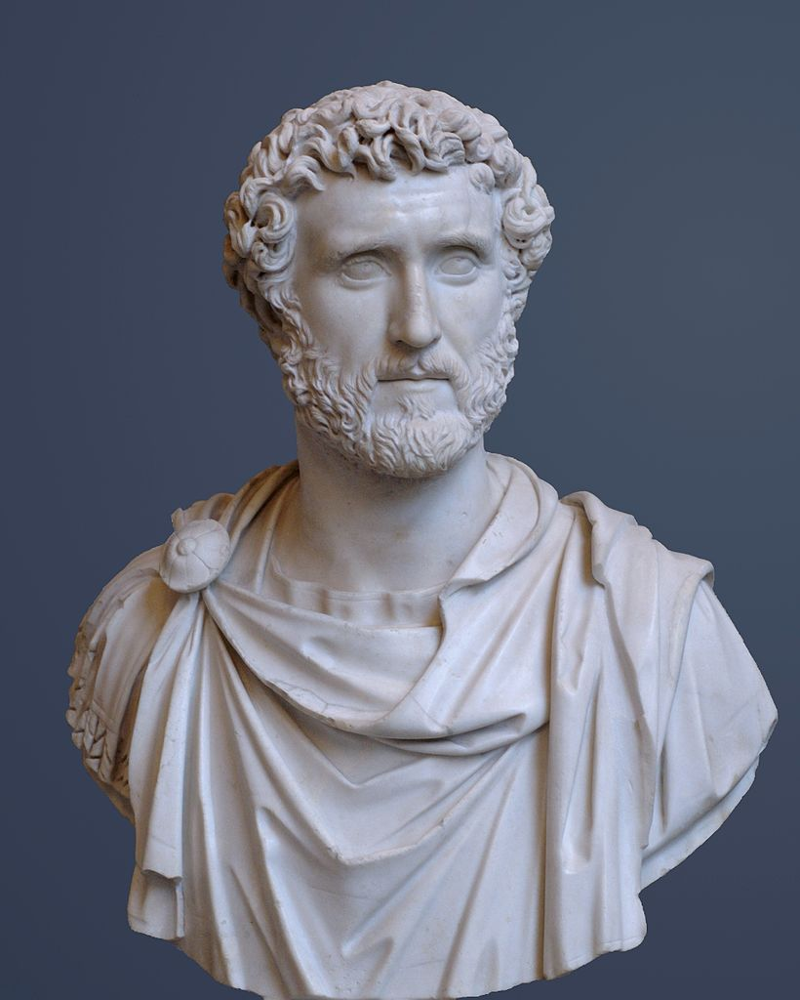

Suositeltu artikkeli
 Antoninus Pius (synt. Aurelius Fulvus Boionius Arrius Antoninus) (19. syyskuuta 86 – 7. maaliskuuta 161) oli Rooman keisari joka hallitsi 10. heinäkuuta 138 – 7. maaliskuuta 161. Antoninus sai lisänimensä Pius (”velvollisuudentuntoinen”) noustuaan valtaan vuonna 138. Hän kuului Nerva–Antoninusten hallitsijasukuun ja oli suosittu ja kunnioitettu keisari, joka tunnettiin lempeydestään ja oikeamielisyydestään.
Antoninus Piuksen valtakautta on usein sanottu Rooman valtakunnan kultakaudeksi, jolloin talous kukoisti, poliittinen tilanne oli vakaa ja armeija vahva. Hän hallitsi pitempään kuin yksikään Rooman keisari Augustuksen jälkeen, ja hänen kautensa tunnetaan erityisen rauhallisena, joskaan ei sodattomana. Antoninus adoptoi Marcus Aureliuksen ja Lucius Veruksen vallanperijöikseen. Hän kuoli vuonna 161.